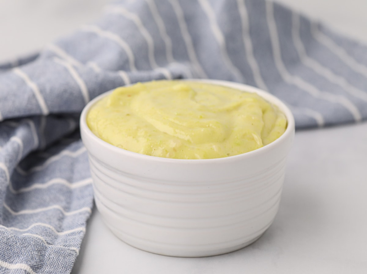

Wasabi-Mayo Sauce

Description
This wasabi sauce is great on salmon, and it's made with just three ingredients!
Ingridients
- 1 ½ teaspoons wasabi powder
- 1 teaspoon water
- 3 tablespoons mayonnaise
Steps
- Mix wasabi powder and water together in a small bowl to form a paste.
Let sit for 1 minute, then stir in mayonnaise.